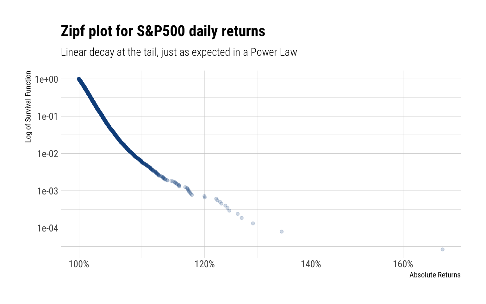
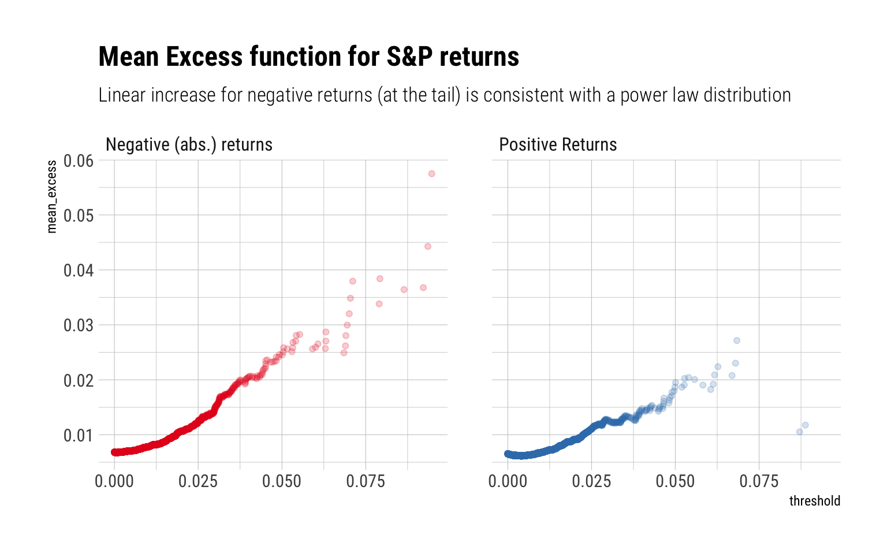

c("^GSPC") %>%
tq_get(from = "1948-01-09") -> sp_dataIn this blogpost, I’ll answer the question, following Nassim Taleb’s latest technical book: Statistical Consequences of Fat Tails, when can we use GARCH (and firends) models? As an example, also following Taleb, I’ll check the resulting conditions with the S&P500.
What are the obstacles?
The Generalized Autoregressive Conditional Heteroskedasticity (GARCH) family of models attempt to model a given time series by exploiting “volatility” clustering (i.e., for some periods volatility is consistently high, for other periods is consistently low). When is this warranted?
- The theoretical variance must exist.
- We must be able to reliably estimate the variance with the amount of data we have.
Of course, neither of the conditions may be satisfied with fat-tailed data. For example, the theoretical mean may exist but the sample mean estimator may suffer from persistent small-sample effect: the Law of Large Numbers (LLN) just works way too slowly. Thus, we cannot reliably estimate the mean.
The exact same thing happens for the variance, just that the problem compounds: higher moments are more fat-tailed than the original random variable and thus the LLN works even more slowly. That is, the theoretical variance may exist but it may be impossible to estimate it with the amount of data we have. A heuristic to know the reliability of the sample variance is the existence of the third and fourth moment. As Taleb says:
In a situation of infinite third moment, the observed second moment will fail to be informative as it will almost never converge to its value
That is, belonging to the class of Power Law tails with (\(\alpha \leq 4\)) cancels the use of the sample variance in any method
Are the conditions satistified for the S&P 500?
Therefore, we could possibly attempt to model the S&P 500’s returns if:
- The theoretical variance exists
- The LLN works fast enough for the variance: i.e., the fourth moment is finite.
Both conditions relate to the fat-tailedness of the returns. If they are fat-tailed, how fat-tailed are them? Could we justify positing an \(\alpha > 4\)? Following Taleb’s explanation, I’ll conduct a battery of tests to diagnose exactly how fat-tailed the returns are and what may be the tail exponent of their tail.
I’ll use all the available data from 1948 to the present day
Zipf Plot
The Zipf-plot, or the log-log plot, is a great way to diagnose if the tails of a distribution decay as a Power Law. For Power Laws, we expect a linear decay at the tail and a variation of several order of magnitudes in the x-axis. The zipf plot for the absolute daily returns of the S&P is thus:

Indeed, we see a linear decay of the tail and a variation of several orders of magnitude in the x-axis. Both signs of fat-tailedness for the day returns.
Mean excess plots
Mean excess plots are also a test of fat-tailedness. For a given threshold \(v\), they estimate:
\[ E[X - v | X > v] \]
That is, how the conditional expectation increases as the threshold increases. For a power-law, we expect a linear increase:

Max-to-Sum Ratios
Max-to-Sum ratio plots are a way to check the existence of higher moments. If a given moment exists, the ratio of the max-to-sum should eventually converge to zero:

Indeed, neither the third nor the fourth moment seem to converge. No Gaussian variable would ever behave like this: a single discontinuous jump in the ratio allows us to deny it. Indeed, the returns clearly follow a power-law in the tail that curbs any convergence for both the skeweness and the kurtosis. Thus, we can say that the tail follows a power law around \(\alpha \approx 3\).
Conclusion
The tails of the daily returns behave like a power law. Thus, the tails wag the dog, as Taleb says. Given the data, only the first two moments seem to converge. Neither the third nor fourth converge. Thus, we posit a power law of around 3 to describe the tails of the daily returns. This power law is so fat-tailed, that it is just not possible to use the sample variance estimate with the amount of available data. Therefore, the use of any model that tries to estimate the variance of the daily returns is not warranted.